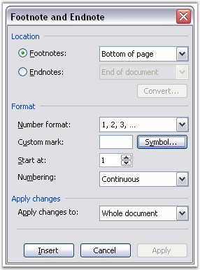

A Footnote is a note of text placed at the bottom of a page in a book or document. It is normally flagged by a superscript number followed by the text where it is referenced to.
An Endnote is a note or reference given at the end of a text or a major text section. Endnotes are similar to footnotes, and the only difference is that they are collected together at the end of a chapter or at the end of work.
To add a footnote or endnote to a document:
1. Select the text to which you want to apply the footnote or endnote.
2. Open Insert menu.
3. Point to Reference, and then click Footnote in the Microsoft Word menu.

Figure 65: Footnote and Endnote Option in MS Word
DocIO has an ability to preserve Word footnotes and endnotes, but their creation and modification with DocIO API is limited.
Footnotes and Endnotes are the subdocuments of Word. Presentation of these subdocuments in the document consists of two parts namely special marker, which defines the footnote or endnote location in the document, and special data, which defines the text and formatting of the subdocument.
WFootnote class represents the structure and properties of footnotes and endnotes. As footnotes and endnotes share the same structure in the document, a single class is used to represent them. This class has the FootnoteType property, which enables you to add a footnote or endnote. It takes two values namely:
· Footnote
· Endnote
Class Hierarchy
ParagraphItem
|
WFootnote
Public Constructor
|
Name |
Description |
|
WFootnote.WFootnote (IWordDocument) |
Initializes a new instance of the WFootnote class |
Public Properties
|
Name |
Description |
|
EntityType |
Gets the type of the entity |
|
FootnoteType |
Gets or sets footnote type: footnote or endnote |
|
IsAutoNumbered |
Gets the value indicating if the footnote is auto numbered |
|
MarkerCharacterFormat |
Gets the marker character format |
|
TextBody |
Gets the text body |
|
SymbolCode |
Gets or sets the marker Symbol code |
|
CustomMarker |
Defines custom (string) marker for footnote. If footnote is autonumbered, this property won’t have any influence (footnote will be autonumbered) |
The following code illustrates how to create a Footnote and an Endnote by using Essential DocIO.
|
[C#]
// Creating a new document WordDocument document = new WordDocument();
// Creating a section IWSection section1 = document.AddSection();
// Adding a paragraph to a section IWParagraph paragraph = section1.AddParagraph();
// Creating a footnote WFootnote footnote = new WFootnote(document);
// Appending endnote footnote = paragraph.AppendFootnote(Syncfusion.DocIO.FootnoteType.Endnote);
// Setting the footnote character format footnote.MarkerCharacterFormat.SubSuperScript = SubSuperScript.SuperScript;
// Inserting Text into the paragraph paragraph.AppendText("Essential DocIO").CharacterFormat.Bold = true;
// Adding footnote text paragraph = footnote.TextBody.AddParagraph();
paragraph.AppendText("Essential DocIO is a .NET library that has a simple yet and powerful object model which provides the ability to customize the document to a great extent. ");
// Saving the document to disk document.Save("Sample.doc", Syncfusion.DocIO.FormatType.Doc); |
|
[VB.NET]
' Creating a new document Dim document As WordDocument = New WordDocument
' Creating a section Dim section1 As IWSection = document.AddSection
' Adding a paragraph to a section Dim paragraph As IWParagraph = section1.AddParagraph
' Creating a footnote Dim footnote As WFootnote = New WFootnote(document)
' Appending endnote footnote= paragraph.AppendFootnote(Syncfusion.DocIO.FootnoteType.Endnote)
' Setting the footnote character format footnote.MarkerCharacterFormat.SubSuperScript = SubSuperScript.SuperScript
'Inserting Text into the paragraph paragraph.AppendText("Essential DocIO").CharacterFormat.Bold = True
' Adding footnote text paragraph = footnote.TextBody.AddParagraph paragraph.AppendText("Essential DocIO is a .NET library that has a simple yet and powerful object model which provides the ability to customize the document to a great extent. ")
' Saving the document to disk document.Save("Sample.doc", Syncfusion.DocIO.FormatType.Doc) |